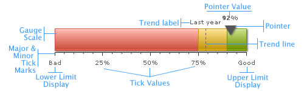

Linear Gauge > Elements of the gauge |
A linear gauge chart can consist of the following elements:
Here we’ll see each of them in detail. Let’s first have a look at a standard linear gauge chart enlisting the various basic components: |
|  |
| Horizontal Scale The linear gauge chart is defined by minimum and maximum values. Within that scale you can create various ranges to classify your data. There can be any number of ranges as you wish to. For each range, you’ll have to specify the minimum and maximum limits, a name for the range and the hex color for the range. Like in the above chart, we have the chart with upper limit as 9 and lower limit as 0. And the color ranges are 0-2, 2-6 and 6-9 and the range names are Micro, Moderate and Strong respectively. Note: Each color range should have its own unique range value. That is say, if a range is defined as 0-2, the next range should have the minimum value as 2 necessarily. It cannot have anything other than this. Similarly, if the upper limit of the chart is 9, the last range should have max value as 9. Data Pointer Tick Marks
For all the tick marks, you can specify the color and the height. You can also opt to show/hide the tick mark values. Trend Points / Trend zones Annotations Now that we are aware of the basic components that make up a linear gauge, lets go ahead to build a sample linear gauge. |